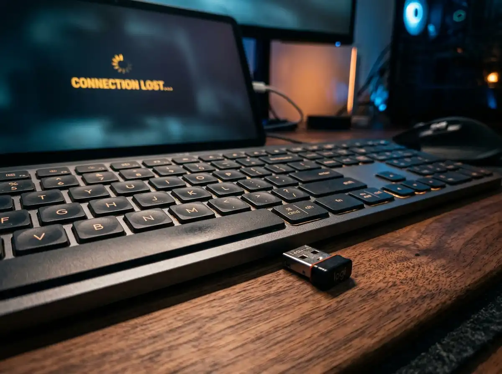

Guides & Tech Explained
8 min read
Why Do Cheap Wireless Keyboards Keep Disconnecting? (5 Quick Fixes)
Is your wireless keyboard lagging, stuttering, or dropping keystrokes? We break down the 5 most common interference issues and how to fix them in seconds.
K
Karim